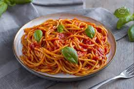

Back home
Pasta al Pomodoro

Description:
La Pasta al Pomodoro è un tipico piatto italiano, molto veloce da preparare ed anche poco impegnativo.
Pochi ingredienti, formano un piatto dal gustosissimo sapore
Ingredients:
- Spaghetti
- Passata di Pomodoro San Marzano
- Olio EVO
- Basilico
- Parmigiano Reggiano
Steps:
Mettere a bollire una pentola colma di acqua
Quando l'acqua inizia a bollire, salarla e calare la pasta
Aspettare i minuti necessari per la cottura della pasta, girandola di tanto in tanto
Quando la pasta è al dente, spegnere il fuoco e scolarla in una padella dove è stata precedentemente versata la passata di pomodoro
Mantecare la pasta aggiungendo acqua di cottura, se necessaria/li>
Aggiungere Basilico Fresco ed un filo di Olio EVO
Impiattare ed aggiungere una spolverata di Parmigiano Reggiano
Buon Appetito <3